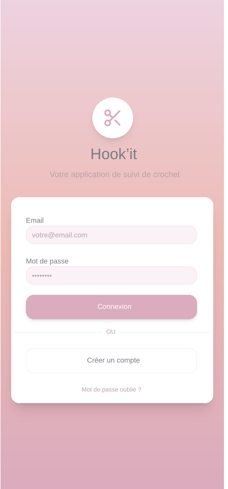
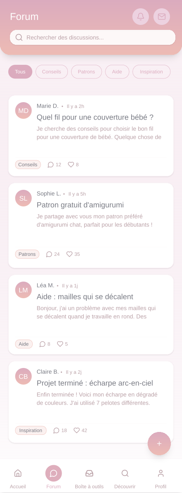
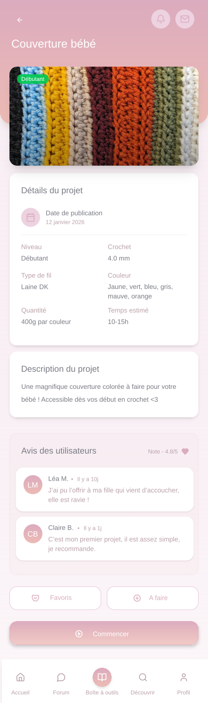
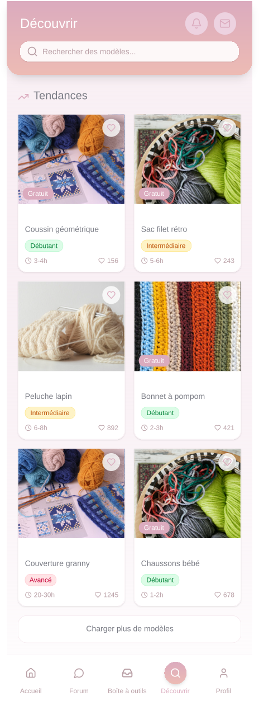
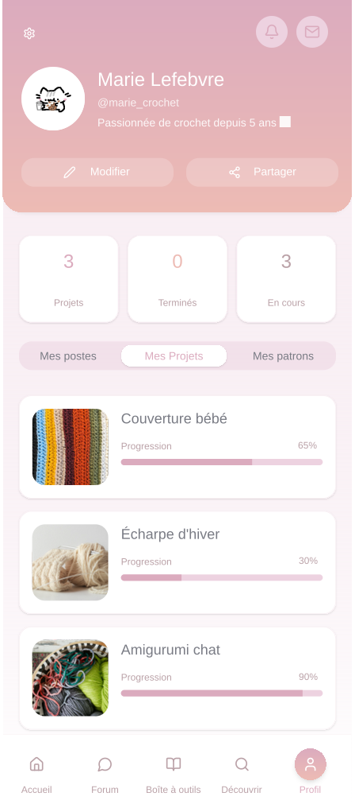

UX/UI Design & Développement front-end & back-end
Création d'une application mobile de crochet

Hook'it
Dans le cadre d'un projet de conception centrée utilisateur, mon équipe et moi avons développé une application dédiée au crochet, une activité en plein essor auprès des jeunes générations. Notre démarche s'est appuyée sur une analyse approfondie de notre cible : entretiens utilisateurs, personas, modélisation UML, puis prototypage Low-Fidelity et High-Fidelity sur Figma, avant le développement de l'application.
Mon rôle a consisté à effectuer la recherche utilisateur ainsi que la conception et les tests des prototypes auprès de notre population cible.
L'application permet de créer un compte, suivre ses projets en cours, accéder à des tutoriels et partager ses créations. L'accent a été mis sur une interface intuitive, une navigation fluide et des fonctionnalités pensées pour répondre aux besoins réels des utilisateurs.
- Type
- Projet de groupe (école)
- Rôle
- Design UX/UI (Figma), entretiens & développement front-end & back-end
- Année
- 2026
- Outils
- Figma, Flutter, Dart, CSS
Galerie




